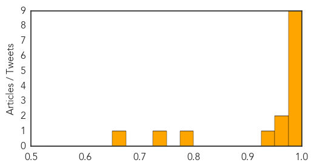
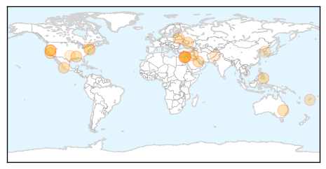
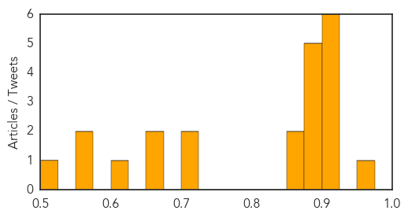

Ebola
30-Day Web Trend
4 alerts, 4 warnings

30-Day Twitter Trend
5 alerts, 0 warnings

Article Locations

Article Confidences
Top Articles:
- 1.000
- Toledo group joins battle against Ebola
- 1.000
- Ebola outbreak 'not out of hand', UN health agency says readying response
- 1.000
- Ebola Virus Deadliest Ever in West Africa
- 0.999
- West Africa at risk of Ebola spread says WHO
- 0.999
- OFWs in West Africa warned anew on Ebola virus
- 0.999
- West African Ebola outbreak is deadliest on record
- 0.999
- WHO regional office for Africa Media Advisory: WHO calls emergency sub-regional Ministerial meeting in Accra, Ghana
- 0.998
- West Africa can’t manage the Ebola outbreak
- 0.993
- Stories From the Front Lines of the Ebola Outbreak
- 0.974
- European Union increases its emergency funding « Awoko Newspaper
- 0.972
- Guardian Liberty Voice
- 0.942
- A Doctor Tries To Save A 9-Year-Old Stricken With Ebola
- 0.788
- Brother’s Brother Foundation (BBF) responds to Ebola outbreak in West Africa - Sierra Leone
- 0.742
- Liberia: Caught Between Poverty and Progress?
- 0.651
- Guinea: Muslims urged to offer Ramadan prayers over Ebola
Top Tweets:
-
No tweets found for Jun 29, 2014
Unknown
30-Day Web Trend
0 alerts, 0 warnings

30-Day Twitter Trend
0 alerts, 0 warnings

Article Locations
Article Confidences
Top Articles:
- 0.953
- African Swine Fever Found in Latvia
- 0.917
- Chicago Tribune
- 0.917
- Chicago Tribune
- 0.917
- Chicago Tribune
- 0.917
- Chicago Tribune
- 0.917
- Chicago Tribune
- 0.917
- Chicago Tribune
- 0.883
- KRNV, Reno, NV
- 0.883
- KRNV, Reno, NV
- 0.883
- KRNV, Reno, NV
- 0.883
- KRNV, Reno, NV
- 0.875
- Killer dog disease detected in NSW
- 0.866
- Families, who fled from violence in Mosul, arrive on the outskirts of Arbil
- 0.866
- Netanyahu calls for supporting Kurdish independence
- 0.724
- Typhoid on one city road
- 0.714
- Implications of Finding Poliovirus in Sewers of Brazil and Israel
- 0.660
- Home ita
- 0.660
- Home ita
- 0.605
- Medicare could penalize local hospitals
- 0.565
- Why you should think before you ink Republican American
- 0.550
- Pakistan refugee crisis creates polio challenge
- 0.507
- Downtown health clinic expands to meet demand
Top Tweets:
- 0.589
- Homenajean a Michel Jackson en Asunción: Al cumplirse en la semana un aniversario más de la muerte de conocido... http://t.co/5JELsaJqve